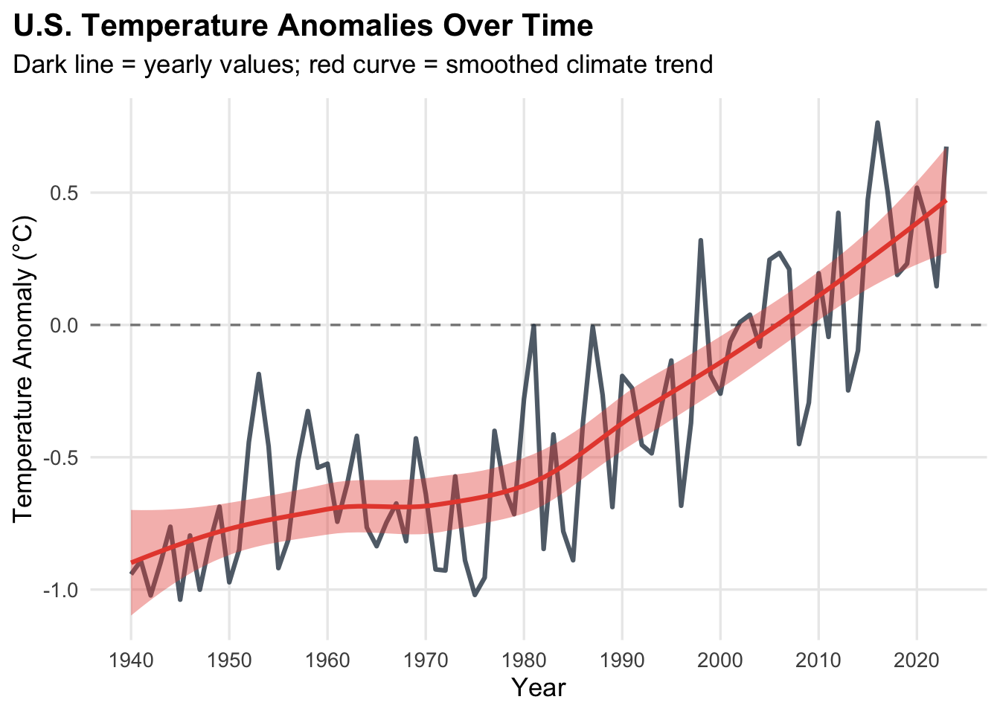
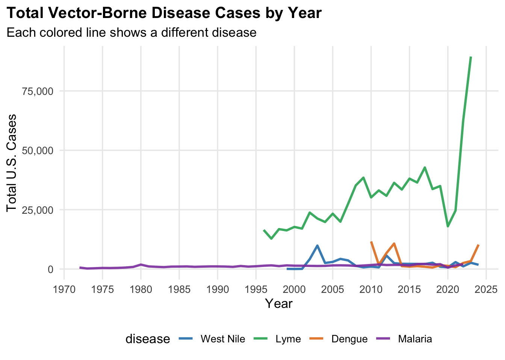
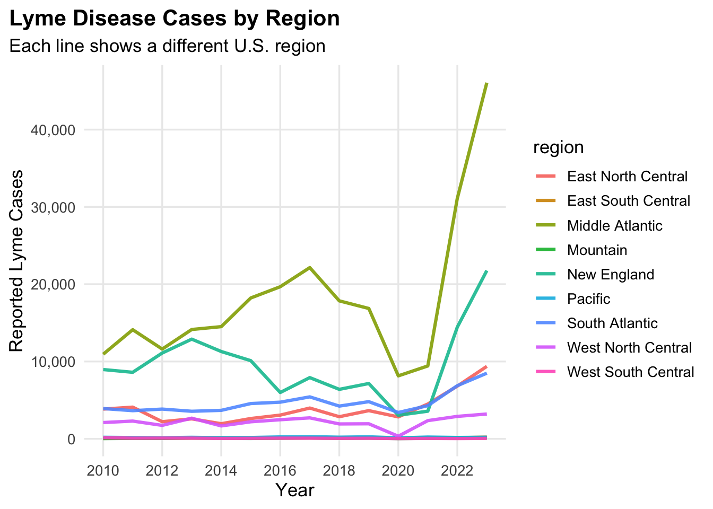
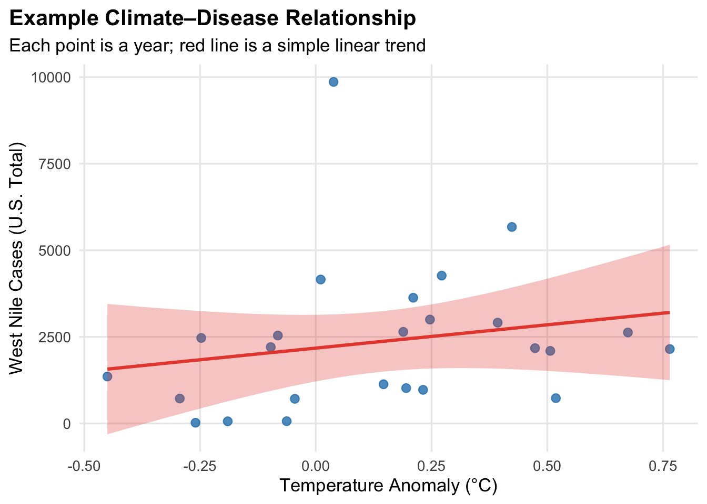

How to Read the Graphs on This Site
This page is a help guide for all of the graphs and
tables on this website.
You’ll see:
- How to read the axes, lines, and colors.
- Examples of climate, disease, and climate–disease graphs.
- Click-to-open R code for every example — so you can recreate them.
If you’re new to R, climate data, or disease surveillance, this page is meant to make everything as clear and reproducible as possible.
Every figure on the other tabs uses this same visual language, so once you recognize the patterns here, you can apply them across the entire site.
1. How the Data Are Loaded
All of the graphs and tables in this project start from the same few cleaned datasets.
- Climate: yearly temperature anomalies, drought
index (PDSI), etc.
- Disease: yearly counts of West Nile, Lyme, Dengue,
and Malaria.
- Regional data: Lyme disease by U.S. region.
- Joined data: a merged file that links climate and disease by year.
Show R code: loading the main datasets
library(tidyverse)
library(scales)
library(broom)
library(knitr)
library(kableExtra)
climate_temp <- readr::read_csv("data/climate_year_temp.csv") |>
mutate(year = as.integer(year))
climate_pdsi <- readr::read_csv("data/climate_year_pdsi.csv") |>
mutate(year = as.integer(year))
master_disease <- readr::read_csv("data/master_disease_comparison.csv") |>
mutate(
year = as.integer(year),
cases = as.numeric(cases),
disease = factor(
disease,
levels = c("West Nile", "Lyme", "Dengue", "Malaria")
)
)
lyme_region <- readr::read_csv("data/lyme_region.csv") |>
mutate(
year = as.integer(year),
cases = as.numeric(cases)
)
climate_disease_join <- master_disease |>
filter(disease == "West Nile") |>
inner_join(climate_temp, by = "year")2. General Tips for Reading the Graphs
Axes
- The x-axis is almost always time
(year or week).
- The y-axis is usually:
- a climate value (temperature anomaly, drought
index), or
- a disease outcome (number of cases).
- a climate value (temperature anomaly, drought
index), or
Lines, Colors, and Panels
- Lines show how values change over time.
- Smooth curves (trend lines) show the overall
pattern, not just noisy ups and downs.
- Color usually separates:
- different diseases, or
- different regions.
- different diseases, or
- Facets/panels are small multiples:
- each panel is a subgraph for one disease or region.
Tables
- Tables give the exact numbers behind the
graphs.
- They are useful when you want to know “How many cases were there in this specific year?” instead of just seeing the pattern.
Quick Legend Key (What the Visual Pieces Mean)
- Dark solid line = yearly or regional values (the
raw pattern over time).
- Bright smooth curve = trend line that smooths out
year-to-year noise.
- Shaded band around the trend line = uncertainty in
the model or trend.
- Dots/points = individual data points (often one dot
per year).
- Dashed horizontal line at 0 = “reference normal”
for anomalies or indices.
- Separate colors / panels = different diseases, regions, or climate variables.
You’ll see this same “visual vocabulary” reused across the site, so once you recognize these pieces, the rest of the graphs become much easier to read.
3. Example: Climate Trend Line Graph
This mirrors the national climate trend plots on the Climate Trends page.

How to Read This Graph
- The dark line shows each year’s temperature
anomaly.
- Points above 0°C → warmer than the long-term average.
- Points below 0°C → cooler than the long-term average.
- Points above 0°C → warmer than the long-term average.
- The red curve is a smoothed trend across all years:
- If it tilts upward, the U.S. is warming over time.
- The dashed horizontal line at 0°C is a reference “normal.”
Show R code: climate trend plot
climate_temp <- readr::read_csv("data/climate_year_temp.csv") |>
mutate(year = as.integer(year))
climate_temp |>
ggplot(aes(x = year, y = temp_anomaly)) +
geom_hline(yintercept = 0, linetype = "dashed", alpha = 0.5) +
geom_line(linewidth = 1.1, alpha = 0.8, color = "#2c3e50") +
geom_smooth(
method = "loess",
se = TRUE,
linewidth = 1.1,
alpha = 0.4,
color = "#e74c3c",
fill = "#e74c3c"
) +
scale_x_continuous(breaks = pretty_breaks(10)) +
labs(
x = "Year",
y = "Temperature Anomaly (°C)",
title = "U.S. Temperature Anomalies Over Time",
subtitle = "Dark line = yearly values; red curve = smoothed climate trend"
) +
theme_minimal(base_size = 13) +
theme(
plot.title.position = "plot",
plot.title = element_text(face = "bold"),
plot.subtitle = element_text(margin = margin(b = 10)),
panel.grid.minor = element_blank()
)4. Example: Multi-Disease Trend Plot
This mirrors the Disease Trends page, where we compare diseases over time.

How to Read This Graph
- Each line is a different disease.
- x-axis = year; y-axis = total U.S.
cases.
- Look for:
- Whether a disease is trending upward, downward, or flat.
- Whether some diseases spike in certain years compared to others.
- Whether a disease is trending upward, downward, or flat.
Show R code: multi-disease trend plot
master_disease <- readr::read_csv("data/master_disease_comparison.csv") |>
mutate(
year = as.integer(year),
cases = as.numeric(cases),
disease = factor(
disease,
levels = c("West Nile", "Lyme", "Dengue", "Malaria")
)
)
disease_year_summary <- master_disease |>
group_by(year, disease) |>
summarize(total_cases = sum(cases, na.rm = TRUE), .groups = "drop")
disease_year_summary |>
ggplot(aes(x = year, y = total_cases, color = disease)) +
geom_line(linewidth = 1.1, alpha = 0.9) +
scale_color_manual(values = c(
"West Nile" = "#2980b9",
"Lyme" = "#27ae60",
"Dengue" = "#e67e22",
"Malaria" = "#8e44ad"
)) +
scale_y_continuous(labels = label_comma()) +
scale_x_continuous(breaks = pretty_breaks(10)) +
labs(
x = "Year",
y = "Total U.S. Cases",
title = "Total Vector-Borne Disease Cases by Year",
subtitle = "Each colored line shows a different disease"
) +
theme_minimal(base_size = 13) +
theme(
plot.title.position = "plot",
plot.title = element_text(face = "bold"),
legend.position = "bottom",
panel.grid.minor = element_blank()
)5. Example: Regional Lyme Patterns
Here we zoom in on Lyme disease and compare regions.

How to Read This Graph
- Each colored line is one U.S. region.
- Regions with lines much higher on the graph have more Lyme
cases.
- The slope shows whether a region is experiencing a rise or decline in reported Lyme.
Show R code: regional Lyme plot
lyme_region <- readr::read_csv("data/lyme_region.csv") |>
mutate(
year = as.integer(year),
cases = as.numeric(cases)
)
lyme_region |>
ggplot(aes(x = year, y = cases, color = region)) +
geom_line(linewidth = 1.1, alpha = 0.9) +
scale_y_continuous(labels = label_comma()) +
scale_x_continuous(breaks = pretty_breaks(8)) +
labs(
x = "Year",
y = "Reported Lyme Cases",
title = "Lyme Disease Cases by Region",
subtitle = "Each line shows a different U.S. region"
) +
theme_minimal(base_size = 13) +
theme(
plot.title.position = "plot",
plot.title = element_text(face = "bold"),
legend.position = "right",
panel.grid.minor = element_blank()
)6. Example: Climate–Disease Comparison (Scatterplot)
This kind of plot is used on the Climate–Disease Comparison page.

How to Read This Graph
- Each point is a year:
- Horizontal position = how warm/cool the year was.
- Vertical position = how many West Nile cases that year.
- Horizontal position = how warm/cool the year was.
- The red line is a simple linear model:
- Upward slope = warmer years tend to have more cases.
- Downward slope = warmer years tend to have fewer cases.
- Upward slope = warmer years tend to have more cases.
- The shaded band shows the uncertainty around the model.
This kind of plot suggests a relationship but does not prove causation.
Mosquito control, reporting practices, and human behavior all matter too.
Show R code: climate–disease scatterplot and model
climate_temp <- readr::read_csv("data/climate_year_temp.csv") |>
mutate(year = as.integer(year))
master_disease <- readr::read_csv("data/master_disease_comparison.csv") |>
mutate(
year = as.integer(year),
cases = as.numeric(cases),
disease = factor(
disease,
levels = c("West Nile", "Lyme", "Dengue", "Malaria")
)
)
climate_disease_join <- master_disease |>
filter(disease == "West Nile") |>
inner_join(climate_temp, by = "year")
climate_disease_join |>
ggplot(aes(x = temp_anomaly, y = cases)) +
geom_point(alpha = 0.8, size = 2.5, color = "#2980b9") +
geom_smooth(
method = "lm",
se = TRUE,
linewidth = 1.1,
color = "#e74c3c",
fill = "#e74c3c",
alpha = 0.3
) +
labs(
x = "Temperature Anomaly (°C)",
y = "West Nile Cases (U.S. Total)",
title = "Example Climate–Disease Relationship",
subtitle = "Each point is a year; red line is a simple linear trend"
) +
theme_minimal(base_size = 13) +
theme(
plot.title.position = "plot",
plot.title = element_text(face = "bold"),
panel.grid.minor = element_blank()
)
# Optional: look at the linear model itself
model_westnile <- lm(cases ~ temp_anomaly, data = climate_disease_join)
broom::tidy(model_westnile)7. Example Tables and Their Code
Sometimes seeing the exact numbers is helpful.
Here are two simple table examples and the R code behind them.
7.1. Summary Table of Recent Disease Cases
| Year | Disease | Total Cases |
|---|---|---|
| 2024 | West Nile | 1791 |
| 2024 | Dengue | 10283 |
| 2023 | West Nile | 2628 |
| 2023 | Lyme | 89468 |
| 2023 | Dengue | 3352 |
| 2022 | West Nile | 1132 |
| 2022 | Lyme | 62551 |
| 2022 | Dengue | 2540 |
| 2022 | Malaria | 1999 |
| 2021 | West Nile | 2911 |
| 2021 | Lyme | 24611 |
| 2021 | Dengue | 814 |
| 2021 | Malaria | 1550 |
| 2020 | West Nile | 731 |
| 2020 | Lyme | 18000 |
| 2020 | Dengue | 1337 |
| 2020 | Malaria | 602 |
| 2019 | West Nile | 971 |
| 2019 | Lyme | 34945 |
| 2019 | Dengue | 1593 |
| 2019 | Malaria | 2048 |
Show R code: recent disease table
disease_year_summary <- master_disease |>
group_by(year, disease) |>
summarize(total_cases = sum(cases, na.rm = TRUE), .groups = "drop")
recent_disease_table <- disease_year_summary |>
filter(year >= max(year) - 5) |>
arrange(desc(year), disease)
recent_disease_table |>
kbl(
caption = "Recent total U.S. cases by disease and year",
col.names = c("Year", "Disease", "Total Cases")
) |>
kable_styling(full_width = FALSE)7.2. Simple Model Output Table
This shows the kind of model summary used behind the climate–disease comparisons.
| term | estimate | std.error | statistic | p.value |
|---|---|---|---|---|
| (Intercept) | 2175.976 | 465.036 | 4.679 | 0.000 |
| temp_anomaly | 1346.791 | 1359.005 | 0.991 | 0.332 |
Show R code: model summary table
8. Checklist: Reading Any Graph on This Site
When you look at a graph or table anywhere on this site, you can use this quick checklist:
- What is on each axis?
- Time? Temperature anomaly? Cases? Index value?
- What do the colors or panels represent?
- Diseases, regions, or climate variables?
- What is the big-picture shape?
- Mostly going up, mostly going down, or staying flat?
- Is there a trend line or model?
- What does it suggest about the relationship?
- How strong or uncertain does it look?
- What does it suggest about the relationship?
- How might climate and disease be linked here — and what else
could be going on?
- Think about mosquito control, reporting changes, population movement, and other real-world factors.
If you can walk through these questions, you’re reading the graphs like a scientist — and you’re ready to dig into the rest of the project with confidence.
9. Common Mistakes to Watch For
-
Ignoring the axes.
Always check what the x- and y-axes actually measure before jumping to conclusions. -
Forgetting about scale.
A steep-looking line might still represent a small change if the y-axis range is narrow. -
Overreacting to one weird year.
Outliers happen. Look at the overall pattern and the trend line, not just a single spike. -
Confusing correlation with causation.
When climate and disease move together, it suggests a relationship, but other factors (vector control, reporting, healthcare, travel) still matter. -
Forgetting data limitations.
Surveillance data are never perfect. Under-reporting, changes in testing, or changes in case definitions can all affect the numbers you see.
Keeping these in mind helps you treat every graph as a starting point for questions, not the final answer.
Once you feel comfortable with this page, you can jump back to the main story by visiting the Climate Trends, Disease Trends, or Climate–Disease Comparison tabs and applying the same reading strategies there.
Created by Garrett Warr | GEOG 3000 – Climate Change in Science & Society | Data for educational purposes only.